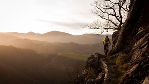
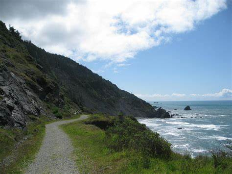
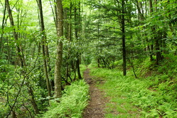
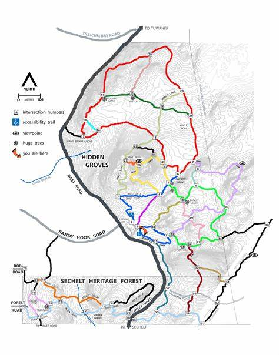

Featured Trails
Discover the best e-biking trails in the Bay Area

Moderate
Mountain View Trail
Distance: 12 miles
Elevation: 1,200 ft
Duration: 2-3 hours
A scenic route through the mountain ranges with breathtaking views of the bay.
View Trail Details

Easy
Coastal Route
Distance: 8 miles
Elevation: 200 ft
Duration: 1-2 hours
A relaxing coastal trail perfect for beginners and scenic photography.
View Trail Details

Hard
Forest Loop
Distance: 15 miles
Elevation: 2,000 ft
Duration: 3-4 hours
A challenging forest trail with technical sections and rich wildlife.
View Trail DetailsTrail Map
